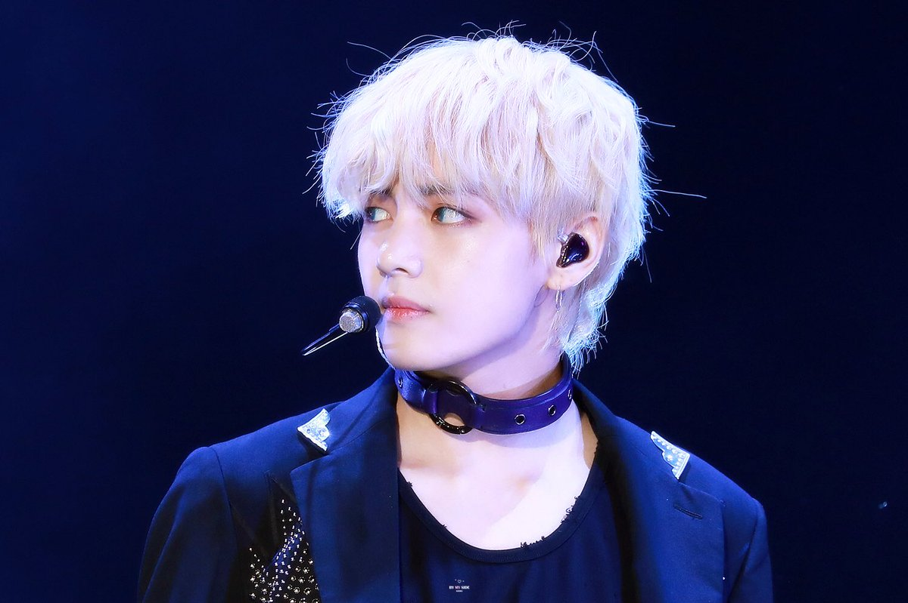

RM also known as Kim Namjoon is the leader and spokesperson of BTS. He is 25 years old and was the first member to sign with their record company BigHit Entertainment in 2010. Music, particualrity rapping, had been RM’s passion his whole life. From a young age he wrote his own music and became an undergroung rapper before joining BTS. His talent was discovered by Bang Shihyuk, the CEO of BigHit Entertainment and was casted to be the first member of BTS. Much later, he was the one who delivered BTS’s speech at the United Nations and is the one who usually speaks the most at US interviews as he is fluent in English. He is known as the “brain” of the group and has an impressive IQ of 148.

Jin also known as Kim Seokjin is the oldest member of BTS at the age of 26. He is the visual of BTS. This means that he was casted as best looking to be the face of the group. Though this is not popular in the West, most Kpop groups have a member called the “visual”. He was casted at a point where BTS desperately wanted to debut but needed another reason for fans to listen to their songs even though their record company was not popular. Jin was casted off the street solely based on his appearance to attract fans’ attention with his looks in hopes that they would give their music a try after seeing him. Innitially, he was only supposed to be an actor for the company and pretend to be in the group. However, his current main role in the group is as a vocalist. Jin worked very hard on his singing and dancing to be good enough to become a real member and be able to perform live with BTS. Needless to say, he succeeded, and music is now one of his greatest passions. His other passion is cooking. Jin is a skilled cook and owns his own restaurant in Korea named “Ossu Seiromush”.
Suga also known as Min Yoongi is the main rapper of BTS. He is 24 years old and aside from being the main rapper, he also composes most of BTS’s songs on the piano. He works on their songs in his studio that he calls the “Genius Lab”. Much like Rm, Suga was an underground rapper in his teen years. He went by the stage name “Gloss” and was in a rap group named “D-Town” in his hometown Daegu. He had gained some popularity when he too was discovered by CEO Bang Shihyuk. Suga was conviced to join BTS as a producer and later became the main rapper as well. He was very poor growing up. He said that in highschool,he had to chose between taking the bus back home from school or having a meal. Joining BTS helped his familiy greatly financially after the group began to become more popular but it was very risky for him to join if the group wouldn’t have has success since he would have been left penniless.
J-Hope also known as Jung Hoseok is the main dancer of BTS. He is 24 years old. He coreographs the dances that BTS have for most of their songs. He is also resposible for teaching the other members the coreographies. He was innitially a trainee under the very popular label company JYP entertainment. This company has a large number of people constantly auditioning for variouos positions to form new groups. Therefore, JYP is very picky with what they look for in a trainee and have very strict rules. They then made the decision to replace J-Hope since he wasn’t considered the most attractive. Subsequently, J-Hope joined BigHit, a small company as he still wanted to persue his dream to be an idol but didn’t want to be replaced again because of his looks by a company that had too many people to chose from. At first, he was supposed to be a vocalist but he became a rapper since his bandmate V (Kim Taehyung) wanted to be a vocalist instead of a rapper as he was assigned. The two were then permitted to switch and J-Hope taught himslef how to rap and with the help of RM and Suga, he became the third rapper of BTS.
Jimin, whose full name is Park Jimin is the main dancer and volcalist of BTS. He is 23 years old. His impressive contemporary, modern, and ballet sttyle dance make him stand out. His talent convinced his highschool dance teacher to personally pay for his dance school tuition as his family couldnt afford it. This teacher thought that Jimin also had a beautiful voice and encouraged him to audition for BigHit entertainment. After auditioning, Jimin was thrilled to learn he was accepted and became the last member of BTS. He was so talented and hardworking that he only needed to train for half as long as trainees usually do before debuting. Fans adore his stage presence and unique voice and dance.

V also known as Kim Taehyung is another vocalist of BTS. He is 23 years old and is best known for his very deep voice which provides contrast with the voices of the other vocalists. Though the is not the official visual of the group, Taehyung has won many awards in Korea, as well as Worldwide for his looks. For instance, he was voted #1 in the 100 Top Most Handsome Faces in 2017 ans 2018. His family were farmers and he lived in the countryside of Daegu, South Korea. He said he would have also become a farmer if he hadn’t had the chance to audition for BigHit Entertainment. He thought that his dream of becoming an idol on a group was too far-fetched and it wasn’t realistic. V accompanied his friend to his audition and wasn’t planning on auditioning himself. However, when he arrived the staff encouraged him to audition too after seeing his good looks and hearing that he too loved music. To his surprise, his friend was not the one accepted, but it was him. His parents approved of his new carrer opportunity and V proceeded to become a trainee and then join BTS.
Jungkook, whose full name is Jeon Jungkook is the main volcalist of BTS. He is the youngest at 21 years old. He is called the“Golden Maknae” of the group. In Korean, “maknae” means the youngest one and he is called “golden” since he is said to be good at everything. Even if his role is main vocalist, he can also rap, dance, play sports, study well, and is also considered very good-looking. Before become this valued and appreciated in BTS, Jungkook wanted to start his carrer as a singer since his early tenage years. Thus, he participated in a Korean singing contest called “Superstar K”. Unfortunately, Jungkook was cut from the show before the show was aired and he was not exposed to the public. Still, many record companies who were scouting trainees found his audition and many of them, including JYP Entertainment, FNC Entertainment and Starship Entertainment contacted him to sign him. Jungkook decided to join BigHit entertainment even though they were not popular like the other companies because of RM. Jungkook said RM inspired him and was a parental figure to him when he was afraid because he was alone in the Seoul, the capital of Korea, far from his family who lived in Busan.
Return to the top of the page.